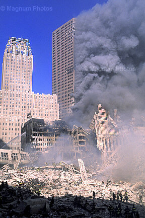

Comment 28
Issue: Observed fuming pattern not properly defined or explained
Location: Page 271 of 404 of pdf (labeled page 227 of report), Page 158 of 404 of pdf (labeled page 114 of report), Page 161 of 404 of pdf (labeled page 117 of report), http://wtc.nist.gov/media/NIST_NCSTAR_1-9_Vol1_for_public_comment.pdf
Figure 5—24. Cropped photograph of the west face of WTC 7 shot from West Street between 3:30 p.m. and 4:30 p.m. on September 11.
The structure on the left is the Verizon Building, and the building just visible at the bottom is WTC 6. The intensity levels have been adjusted. |
Figure 5—27. Cropped photograph showing the dust cloud created by the collapse of WTC 2.
The image was shot from the west at 10:03:56 a.m. WTC 7 can barely be seen above the cloud. The intensity levels of the photograph have been adjusted. |
| Figure 94. Page 158 of 404 of pdf (labeled page 114 of report), http://wtc.nist.gov/media/NIST_NCSTAR_1-9_Vol1_for_public_comment.pdf |
Figure 95. Page 161 of 404 of pdf (labeled page 117 of report), http://wtc.nist.gov/media/NIST_NCSTAR_1-9_Vol1_for_public_comment.pdf |
The theoretical time for free fall (i.e., neglecting air friction), was computed from,
where t is the descent time (s), h is the distance fallen (ft), and g is the gravitational acceleration constant, 32.2 ft/s2 (9.81 m/s2). Upon substitution of h = 242 ft. in the above equation, the estimated free fall time for the top of the north face to fall 18 stories was approximately 3.9 s. The uncertainty in this value was also less than 0.1 s.
Thus, the actual time for the upper 18 stories to collapse, based on video evidence, was approximately 40 percent longer than the computed free fall time and was consistent with physical principles. |
Figure 96. [emphasis added]
page 79 of 115 of pdf, (labeled page 41 of report), http://wtc.nist.gov/media/NIST_NCSTAR_1A_for_public_comment.pdf |
Reason for Comment: Analysis is incomplete and does not address the disintegration of the building. If the top portion of the building "fell" at near free-fall speed, it would have encountered no more resistance from the lower portions than from air. But, the building disintegrated while falling as if it encountered very high resistance. Here we have conditions which contradict each other and which NIST fails to address, much less explain. In fact, the observed conditions are consistent with unusual energy effects that are obvious and that mandate explanation. The failure to address the observed conditions may be evidence of fraud and/or criminal wrongdoing.
|
|

|
Figure 100. WTC7 appears to be dissolving.
Source: image001.jpg |
Figure 101. WTC7 appears to be dissolving.
Source: NYC14148.jpg |
|
|

|
| Figure 102. WTC1 lathering up shortly after the destruction of WTC2. This is a distinctive phenomenon. This occurred prior to the "initiation of collapse" of WTC1. |
Figure 103. WTC1 disintegrated while falling.
|
Suggestion for Revision: We have no explanation for for what caused WTC7 to dissolve and if there are those who wish to assert that our failure to address this is fraudulent, then they may do so. We acknowledge being placed on notice of this claim of fraud in comments received from Dr. Judy Wood.
|


{kind=link}
{kind=link}